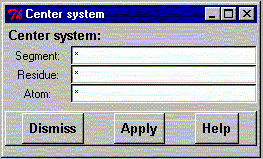

**************************************************************************
center system widget
Leif Laaksonen CSC 1999
**************************************************************************
Center the system according to the given atom(s). It is also possible to give an absolute x,y z coordinate. The x coordinate value is placed in the segment field, y coordinate value in the residue field and z coordinate value is placed in the atom field.
Press then the "Apply" button.

Line command : see center command
**************************************************************************
LUL/1999
**************************************************************************